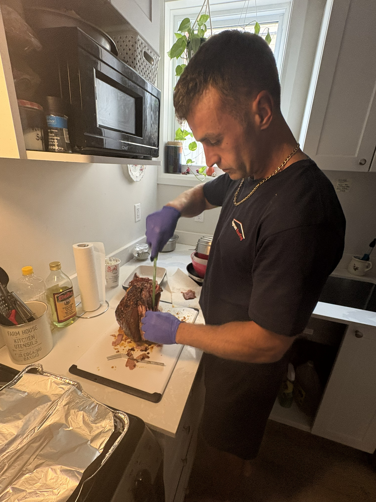

New: When Small Systems Work
What Owen Sound taught me about continuum of care, front-line workers, and why smaller recovery systems can sometimes reduce the friction that makes people fall through the cracks.
Read the full article →
Cold Turkey Is Dead
Why medical detox is the only safe move with today's toxic drug supply. Real talk from a sober roofer in Ottawa + how to actually get help.
Read the full article →
Navigating Crisis Services in Ottawa
Three clear pathways: Homeless • Still Working • Court-involved
Read the full article →
Shedding the Prison Identity
One of the hardest parts of recovery is letting go of the old prison mindset and beliefs that kept me stuck for years. This chart helped me understand the Motivation Window and why timing matters when change finally becomes possible.
Read the full article →